6 Digital Surface Model and Canopy Height model
Digital Surface Models (DSM) and Canopy Height Models (CHM) are raster layers that represent - more or less - the highest elevation of ALS returns. In the case of a normalized point cloud, the derived surface represents the canopy height (for vegetated areas) and is referred to as CHM. When the original (non-normalized) point cloud with absolute elevations is used, the derived layer represents the elevation of the top of the canopy above sea level, and is referred to as DSM. Both surface models are derived using the same algorithms, with the only difference being the elevation values of the point cloud.
Different methods exist to create DSMs and CHMs. In the most simple case, a grid can be created with a user-defined pixel size and the elevations of the highest point can be assigned to each grid cell. This is called point-to-raster. More complex methods have been presented in the literature. In this section we will use the normalized MixedConifer.laz data set, which is included internally within lidR to create reproducible examples.
LASfile <- system.file("extdata", "MixedConifer.laz", package ="lidR")
las <- readLAS(LASfile)
plot(las, size = 3,bg = "white")
6.1 Point-to-raster
Point-to-raster algorithms are conceptually simple, consisting of establishing a grid at a user defined resolution and attributing the elevation of the highest point to each pixel. Algorithmic implementations are computationally simple and extremely fast. In the first example we will set the pixel size to 1 and set algorithm = p2r().
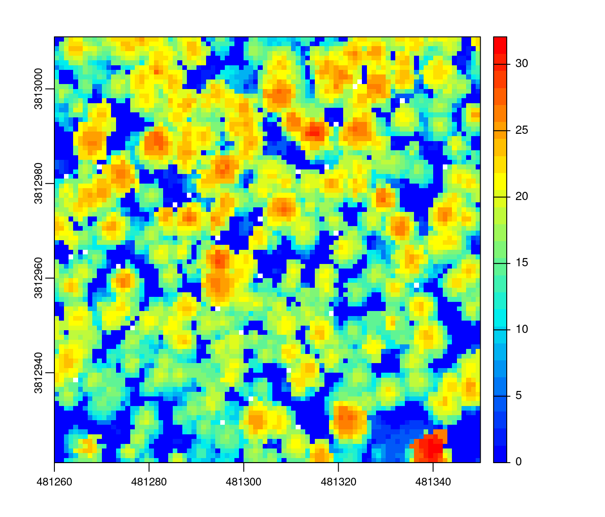
One drawback of the point-to-raster method is that some pixels can be empty if the grid resolution is too fine for the available point density. Some pixels may then fall within a location that does not contain any points, and as a result the value is not defined.
In the following example we will use the exact same method, but increase the spatial resolution of the raster by changing the pixel size to 0.5 m.
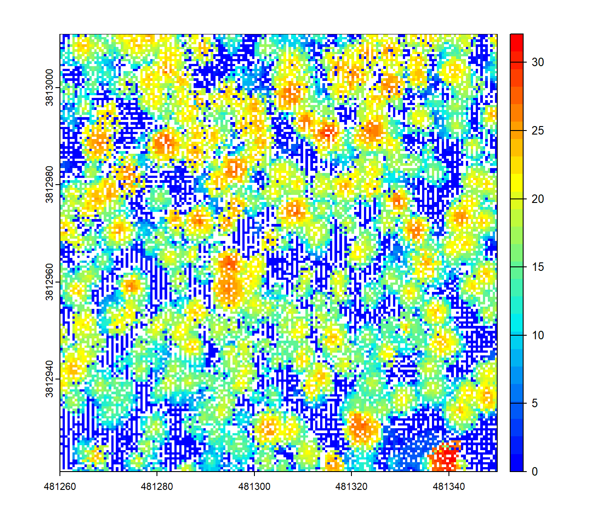
We can clearly see that there are a lot of empty pixels in the derived surface that correspond to NA pixels in the point cloud. The spatial resolution was increased, however the CHM contains to many voids.
One option to reduce the number of voids in the surface model is to replace every point in the point cloud with a disk of a know radius (e.g. 15 cm). This operation is meant to simulate the fact that the laser footprint is not a point, but rather a circular area. It is equivalent to computing the CHM from a densified point cloud in a way that tries to have a physical meaning.

This CHM is the CHM computed “as if” the point cloud was the following
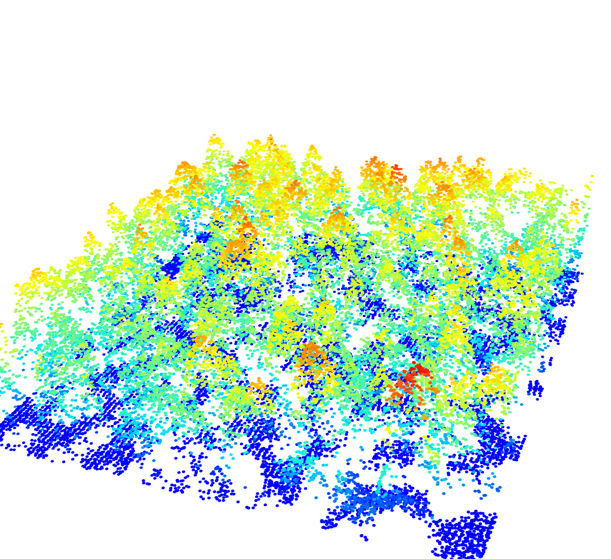
We can zoom in to see the small disks that replace each point.
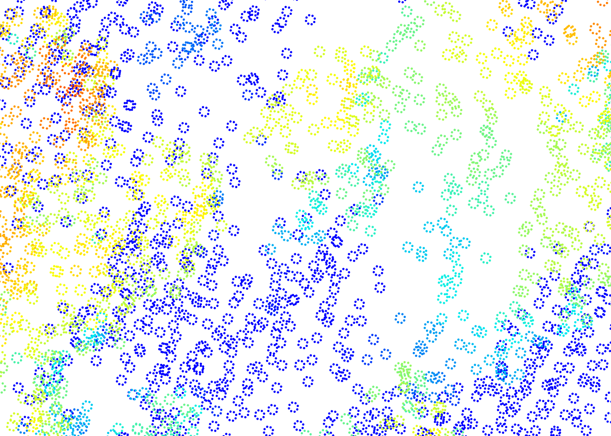
The p2r() function contains one additional argument that allows to interpolate the remaining empty pixels. Empty pixels are interpolated using methods described in section 4.
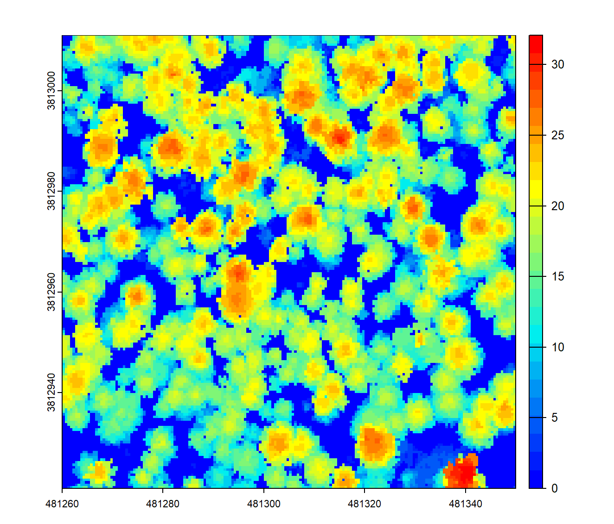
6.2 Triangulation
The triangulation algorithm works by first creating a triangular irregular network (TIN) using first returns only, followed by interpolation within each triangle to compute an elevation value for each pixel of a raster. In its simplest form, this method consists of a strict 2-D triangulation of first returns. Despite being more complex compared to the point-to-raster algorithm, an advantage of the triangulation approach is that it is parameter free and it does not output empty pixels, regardless of the resolution of the output raster (i.e. the entire area is interpolated).
Like point-to-raster however, the TIN method can lead to gaps and other noise in the surface - referred to as “pits” - that are attributable to first returns that penetrated deep into the canopy. Pits can make individual tree segmentation more difficult and change the texture of the canopy in a unrealistic way. To avoid this issue the CHM is often smoothed in post processing in an attempt to produce a more realistic surface with fewer pits and less noise. To create a surface model using triangulation we use algorithm = dsmtin().
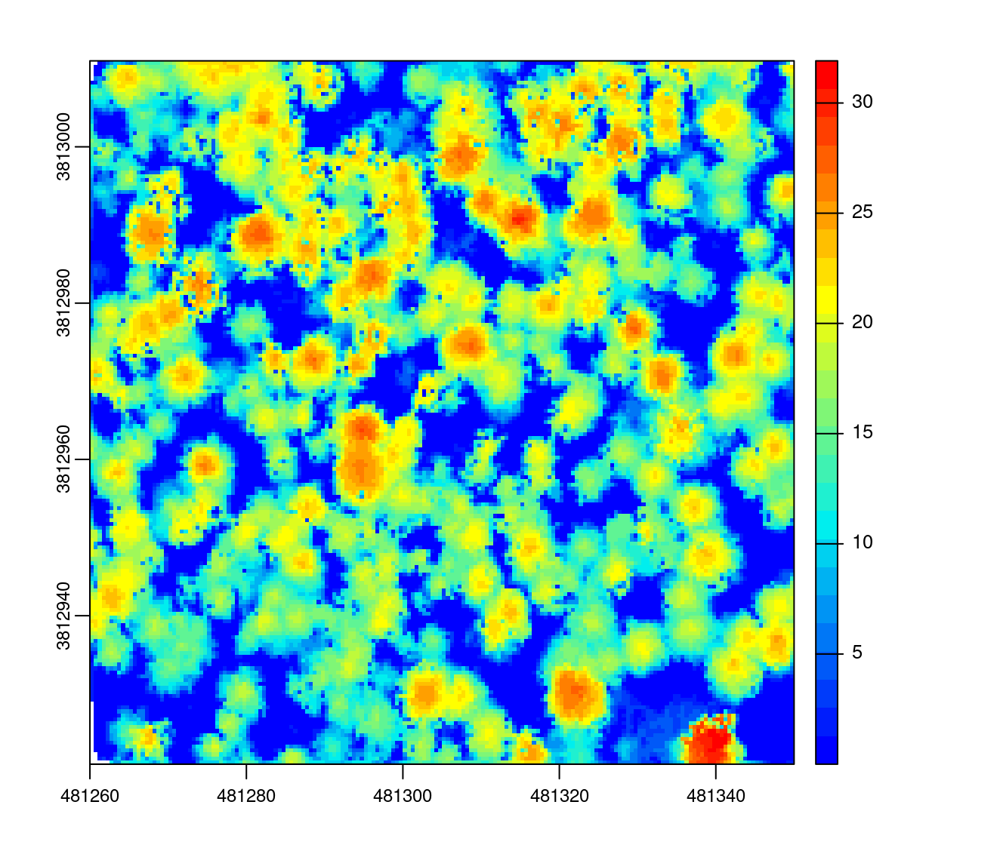
The triangulation method may also be weak when a lot of points are missing. We can generate an example using the Topography.laz data set that contains empty lakes.
LASfile <- system.file("extdata", "Topography.laz", package = "lidR")
las2 <- readLAS(LASfile)
las2 <- normalize_height(las2, algorithm = tin())
plot(las2, size = 3, bg = "white")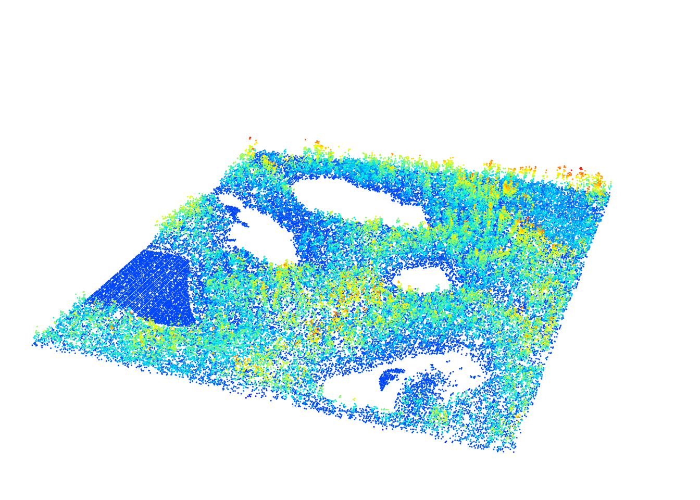
In this case the CHM is incorrectly computed in the empty lakes

To fix this, one option is to use the max_edge argument, which defines the maximum edge of a triangle allowed in the Delaunay triangulation. By default this argument is set to 0 meaning that no triangle are removed. If set to e.g. 8 it means that every triangle with an edge longer than 8 will be discarded from the triangulation.
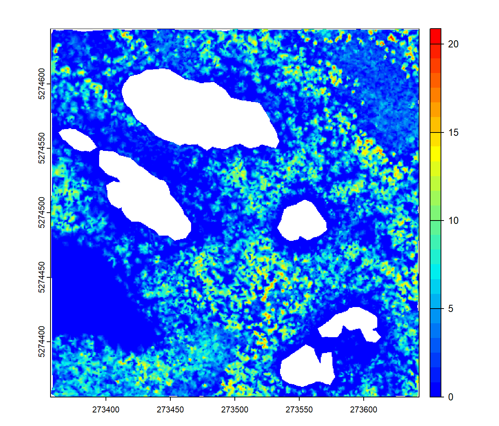
6.3 Pit-free algorithm
More advanced algorithms have also been designed that avoid pits during the computation step instead of requiring post-processing. Khosravipour et al. (2014) proposed a ‘pit-free’ algorithm, which consists of a series of sequential height thresholds where Delaunay triangulations are applied to first returns. For each threshold, the triangulation is cleaned of triangles that are too wide, similar to the example given in the previous section. In a final step, the partial rasters are stacked and only the highest pixels of each raster are retained (figure below). The output is a DSM that is expected to be natively free of pits without using any post-processing or correction methods.
To understand this method better, we can reproduce the figure above with algorithm = dsmtin():
# The first layer is a regular triangulation
layer0 <- grid_canopy(las, res = 0.5, algorithm = dsmtin())
# Triangulation of first return above 10 m
above10 <- filter_poi(las, Z >= 10)
layer10 <- grid_canopy(above10, res = 0.5, algorithm = dsmtin(max_edge = 1.5))
# Triangulation of first return above 20 m
above20 <- filter_poi(above10, Z >= 20)
layer20 <- grid_canopy(above20, res = 0.5, algorithm = dsmtin(max_edge = 1.5))
# The final surface is a stack of the partial rasters
dsm <- layer0
dsm[] <- pmax(layer0[], layer10[], layer20[], na.rm = T)
layers <- raster::stack(layer0, layer10, layer20, dsm)
names(layers) <- c("Base", "Layer10m", "Layer20m", "pitfree")
plot(layers, col = col)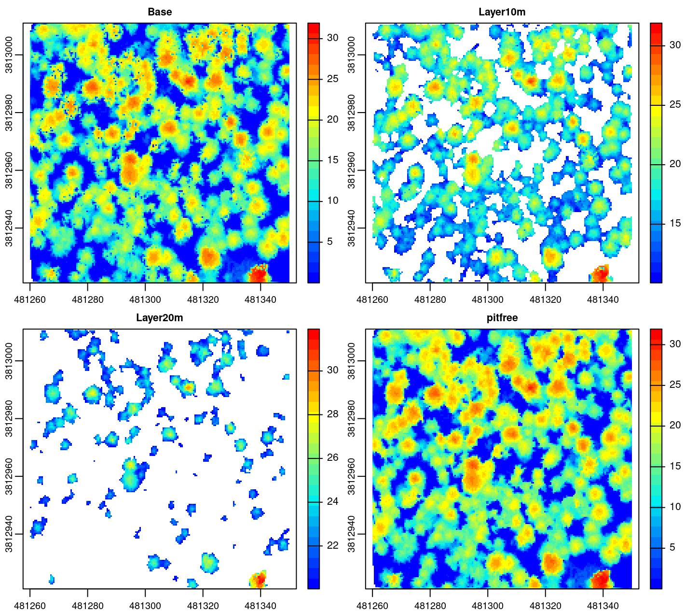
In practice, the internal implementation of pitfree() works much like the example above but is easier to use.
chm <- grid_canopy(las, res = 0.5, pitfree(thresholds = c(0, 10, 20), max_edge = c(0, 1.5)))
plot(chm, col = col)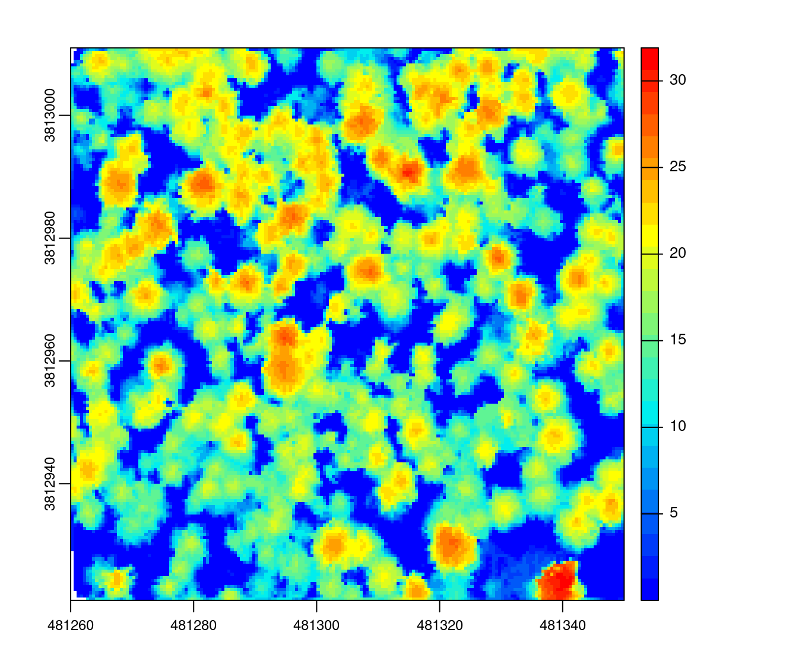
By increasing the max_edge argument for the pit-free triangulation part from 1.5 to 2 the CHM becomes smoother but also less realistic:
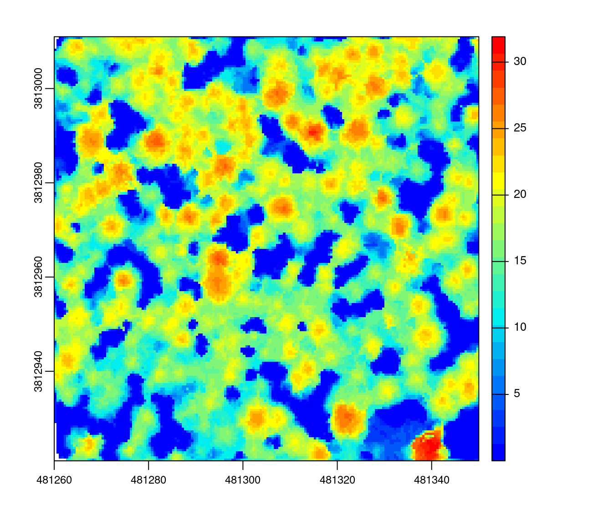
Similarly to point-to-raster, the pit-free algorithm in lidR also includes a subcircle option that replaces each first return by a disk made of 8 points. Because it would be too computationally demanding to triangulate 8 times more points, the choice was made to select only the highest point of each pixel after subcircling to perform the triangulation.
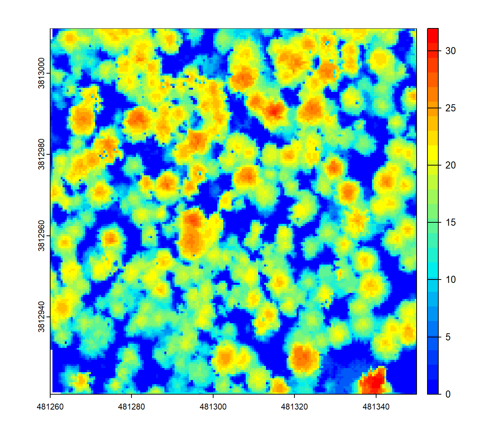
6.4 Post-processing a CHM
CHMs are usually post-processed to smooth or to fill empty pixels. This is mainly because most publications use a point-to-raster approach without any tweaks. One may want to apply a post-processing step to the CHM. Sadly lidR does not provide any tools for that. lidR is a point cloud oriented software. Once a function has returned a raster, the job of the lidR package has ended. Futher work requires other dedicated tools to process rasters. The raster package is one of those. The code below presents a simple option to fill NAs and smooth a CHM with the raster package. For more details see the documentation of the package raster.
fill.na <- function(x, i=5) { if (is.na(x)[i]) { return(mean(x, na.rm = TRUE)) } else { return(x[i]) }}
w <- matrix(1, 3, 3)
chm <- grid_canopy(las, res = 0.5, algorithm = p2r(subcircle = 0.15))
filled <- focal(chm, w, fun = fill.na)
smoothed <- focal(chm, w, fun = mean, na.rm = TRUE)
chms <- stack(chm, filled, smoothed)
names(chms) <- c("Base", "Filled", "Smoothed")
plot(chms, col = col)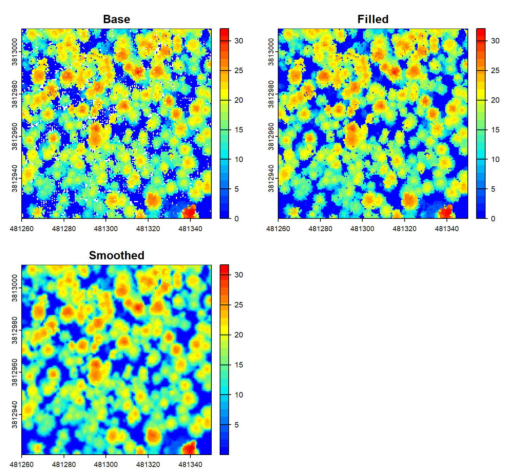